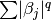
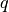

Intelligence
0.0.8
Intelligence
0.0.8
Meta
date: 2016-09-23 author: OctoMiao summary: Shrinkage methods
 cause some of the coefficients reduce exactly to 0: this is variable selection, while producing sparse model.
cause some of the coefficients reduce exactly to 0: this is variable selection, while producing sparse model.Why would lasso leads to exact 0 coefficients?
Would spot the reason as long as you plot out the constraints and the RSS. Fig. 3.11.
For sparse models, lasso is better. Otherwise, lasso can make the fitting worse than ridge.
No rule of thumb.
Ridge and lasso can be generalized. Replace the distance calculation with other definitions, i.e., .
Smaller  leads to tighter selection.
Plot[Evaluate@Table[(1 - x\ :sup:`(q))`\ (1/q), {q,
0.5, 4, 0.5}], {x, 0, 1}, AspectRatio -> 1, Frame -> True, PlotLegends
-> Placed[Table[“q=” <> ToString@q, {q, 0.5, 4, 0.5}], {Left, Bottom}],
PlotLabel -> “Shrinkage as function of L-q norm disance”, FrameLabel ->
{“!(*SubscriptBox[([Beta]), (i)])“,”!(*SubscriptBox[([Beta]), (j)])“}]
Shrinkage as a function of L-q norm distance.
© 2018, Lei Ma| GitHub| Statistical Mechanics Notebook | Index | Page Source| changelog| Created with Sphinx